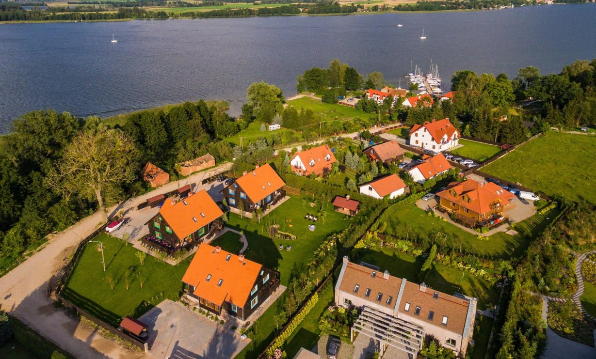

Villa Morela
Witamy na Mazurach!
Twoje wakacje w pięknym domu nad jeziorem!
Sprawdź wolne terminy i zarezerwuj już dziś!
RezerwacjaNasz dom
Przestronna, komfortowa villa z dobrym klimatem, o powierzchni 400 m2.
Wynajmujemy ją w całości, z ogrodem i parkingiem na wyłączność.
Parter
Na parterze znajduje się duża przestrzeń wspólna – salon z wygodnymi kanapami i kominkiem oraz dużym telewizorem. W kuchni jest wszystko, co niezbędne do całodziennego przygotowywania posiłków a przy długim stole zmieszczą się wszyscy domownicy. Z salonu wychodzi się na słoneczny taras i do dużego ogrodu, gdzie jest miejsce na wspólne biesiady przy grillu.
Zdjęcia{kind=link}
Piętro
W pięciu przestronnych sypialniach wygodnie może spać 13 osób. Apartament nad garażem jest oddzielony od reszty domu podwójnymi drzwiami. Posiada małą kuchnię i osobną łazienkę. Jest idealny dla rodziny z małym dzieckiem. Wszystkie łóżka możemy łączyć lub pościelić osobno. Przed przyjazdem prosimy o informację, jak je skonfigurować, a pomocne w tym będą plany domu.
Zdjęcia{kind=link}
Klub i sauna
W podziemiach domu urządziliśmy prawdziwe centrum rozrywki. Jest tu sala klubowa z kominkiem i Tv 60" oraz zestawem kina domowego, sala bilardowa oraz sauna fińska z osobną łazienką.
Zdjęcia{kind=link}
Opis wyposażenia
- Salonkominek, kanapy, komody, TV 55", TV-Sat, blu-ray.
- Kuchnia z jadalnią wysoka lodówka z zamrażarką, zmywarka, płyta indukcyjna, piekarnik, mikrofala, czajnik elektryczny, komplet garnków, naczyń i sztućców.
- Sypialnie szafy, komody, krzesła, stoliki, łóżka kontynentalne z materacami kieszeniowymi, dla każdej osoby komplet pościeli, koc, mały i duży ręcznik.
- Łazienki wc, prysznic, umywalka z szafką, wieszaczki, suszarka do włosów, mydło w płynie, w jednej z łazienek jest pralka
- Klub kanapy, fotele, komoda, barek, TV 60", TV-Sat, blu-ray, zestaw kina domowego, stół bilardowy.
- Taras i ogród leżaki, stół, ławki, grill, hamak, huśtawki i piaskownica dla dzieci.
Galeria
O nas
Stare Sady to cicha wieś letniskowa położona w samym sercu Mazur, na szlaku Wielkich Jezior, tuż nad jeziorem Tałty, 6 km od Mikołajek.
Nasze Sady to zatopiony w zieleni, kameralny kompleks stylowych drewnianych domów. Część z nich to ville z ogrodami do wynajęcia w całości, w innych oferujemy apartamenty i pokoje różnej wielkości.
Villa Morela jest częścią sady.pl
Kontakt
Napisz do nas lub zadzwoń
email: recepcja@sady.pl
tel. +48 603 298 599
Stare Sady 14B11-730 Mikołajki
Społeczności
Nasza wizytówka: